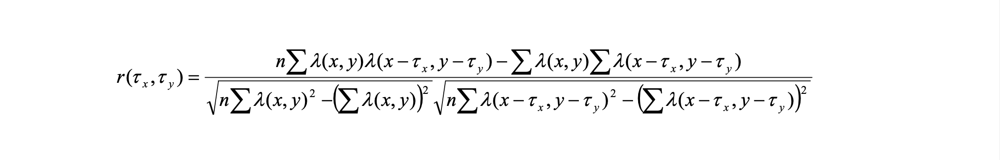

How does the brain encode space?#
In 2006, a group of researchers published a landmark paper (Sargolini et al. 2006) demonstrating that cells in the hippocampus fired in regular spatial intervals. These researchers, May-Britt & Edvard Moser, were awarded the Nobel Prize in 2014 for their efforts.
This tutorial demonstrates how to access the dataset – the very one they won the Nobel Prize for! – published in using dandi.
The dataset contains spike times for recorded grid cells from the medial entorhinal cortex (MEC) in rats that explored two-dimensional environments. The behavioral data includes position from the tracking LED(s).
Contents:#
Streaming NWB files #
This section demonstrates how to access the files on DANDI without downloading them. If you need a refresher, we discussed this in Lesson 1. You can also reference the Streaming NWB files tutorial from PyNWB.
The DandiAPIClient can be used to get the S3 URL of this NWB file stored in the DANDI Archive.
from dandi.dandiapi import DandiAPIClient
dandiset_id, nwbfile_path = "000582", "sub-10073/sub-10073_ses-17010302_behavior+ecephys.nwb" # file size ~15.6MB
# Get the location of the file on DANDI
with DandiAPIClient() as client:
asset = client.get_dandiset(dandiset_id, 'draft').get_asset_by_path(nwbfile_path)
s3_url = asset.get_content_url(follow_redirects=1, strip_query=True)
print(s3_url)
https://dandiarchive.s3.amazonaws.com/blobs/26a/22c/26a22c31-09bc-43a4-9187-edc7394ed12c
Create a virtual filesystem using fsspec which will take care of requesting data from the S3 bucket whenever data is read from the virtual file.
from fsspec.implementations.cached import CachingFileSystem
from fsspec import filesystem
from h5py import File
from pynwb import NWBHDF5IO
# first, create a virtual filesystem based on the http protocol
fs=filesystem("http")
# create a cache to save downloaded data to disk (optional)
fs = CachingFileSystem(
fs=fs,
cache_storage="nwb-cache", # Local folder for the cache
)
file_system = fs.open(s3_url, "rb")
file = File(file_system, mode="r")
# Open the file with NWBHDF5IO
io = NWBHDF5IO(file=file, load_namespaces=True)
nwbfile = io.read()
nwbfile
root (NWBFile)
session_start_time
1900-01-01 00:00:00+01:00timestamps_reference_time
1900-01-01 00:00:00+01:00file_create_date
0
2023-09-16 15:50:09.775622+02:00experimenter
('Sargolini, Francesca',)related_publications
('https://doi.org/10.1126/science.1125572',)acquisition
ElectricalSeries
data
| Data type | float64 |
|---|---|
| Shape | (2880000,) |
| Array size | 21.97 MiB |
| Chunk shape | (5625,) |
| Compression | gzip |
| Compression opts | 4 |
| Compression ratio | 1.5867117300143878 |
electrodes
table
table
| location | group | group_name | |
|---|---|---|---|
| id | |||
| 0 | MEC | ElectrodeGroup pynwb.ecephys.ElectrodeGroup at 0x4628568624\nFields:\n description: The name of the ElectrodeGroup this electrode is a part of.\n device: EEG pynwb.device.Device at 0x4644838992\nFields:\n description: The device used to record EEG signals.\n\n location: MEC\n | ElectrodeGroup |
keywords
| Data type | object |
|---|---|
| Shape | (3,) |
| Array size | 24.00 bytes |
| Chunk shape | None |
| Compression | None |
| Compression opts | None |
| Compression ratio | 0.5 |
[b'medial entorhinal cortex' b'spike times' b'position']
processing
behavior
data_interfaces
Position
spatial_series
SpatialSeriesLED1
data
| Data type | float64 |
|---|---|
| Shape | (30000, 2) |
| Array size | 468.75 KiB |
| Chunk shape | (1875, 1) |
| Compression | gzip |
| Compression opts | 4 |
| Compression ratio | 1.0575039821634329 |
timestamps
| Data type | float64 |
|---|---|
| Shape | (30000,) |
| Array size | 234.38 KiB |
| Chunk shape | (1875,) |
| Compression | gzip |
| Compression opts | 4 |
| Compression ratio | 3.5103115401491882 |
ecephys
data_interfaces
LFP
electrical_series
ElectricalSeriesLFP
data
| Data type | float64 |
|---|---|
| Shape | (150000,) |
| Array size | 1.14 MiB |
| Chunk shape | (2344,) |
| Compression | gzip |
| Compression opts | 4 |
| Compression ratio | 4.069783216214017 |
electrodes
table
table
| location | group | group_name | |
|---|---|---|---|
| id | |||
| 0 | MEC | ElectrodeGroup pynwb.ecephys.ElectrodeGroup at 0x4628568624\nFields:\n description: The name of the ElectrodeGroup this electrode is a part of.\n device: EEG pynwb.device.Device at 0x4644838992\nFields:\n description: The device used to record EEG signals.\n\n location: MEC\n | ElectrodeGroup |
electrodes
table
| location | group | group_name | |
|---|---|---|---|
| id | |||
| 0 | MEC | ElectrodeGroup pynwb.ecephys.ElectrodeGroup at 0x4628568624\nFields:\n description: The name of the ElectrodeGroup this electrode is a part of.\n device: EEG pynwb.device.Device at 0x4644838992\nFields:\n description: The device used to record EEG signals.\n\n location: MEC\n | ElectrodeGroup |
electrode_groups
ElectrodeGroup
device
devices
EEG
subject
units
table
| unit_name | spike_times | histology | hemisphere | depth | |
|---|---|---|---|---|---|
| id | |||||
| 0 | t1c1 | [0.7903958333333333, 0.794, 0.8111666666666667, 0.8313541666666666, 0.9217708333333333, 1.0205208333333333, 1.3573020833333334, 1.6583229166666666, 1.6768645833333333, 2.7457708333333333, 4.008697916666667, 4.01678125, 4.402270833333334, 4.522583333333333, 4.527708333333333, 5.598760416666667, 5.61415625, 5.617927083333333, 5.68934375, 5.701510416666666, 5.714885416666666, 5.71740625, 5.723197916666667, 5.806802083333333, 5.8149375, 5.8207708333333334, 6.1641875, 6.201979166666667, 6.2260625, 6.2363125, 6.3546875, 6.363916666666666, 6.480145833333333, 6.48803125, 6.899927083333333, 6.992489583333334, 6.995885416666667, 7.033135416666667, 7.098052083333333, 7.10146875, 7.105677083333333, 7.245541666666667, 11.069739583333334, 11.499979166666666, 11.5111875, 11.522375, 11.6165, 11.702270833333333, 11.714625, 11.7245, 11.920979166666667, 11.983385416666666, 11.98634375, 11.995645833333333, 12.08903125, 12.105385416666667, 12.148697916666666, 12.157114583333334, 12.165864583333333, 13.123729166666667, 13.206645833333333, 13.224875, 13.232479166666666, 13.362927083333334, 13.40890625, 13.522697916666667, 13.530177083333333, 13.54115625, 13.623927083333333, 13.685302083333333, 13.738260416666666, 13.757302083333334, 13.812510416666667, 13.855427083333334, 13.971072916666667, 13.98659375, 13.992822916666666, 14.082979166666666, 14.162229166666666, 14.165541666666666, 14.394229166666667, 14.397375, 14.488708333333333, 14.492708333333333, 14.500604166666667, 14.547833333333333, 14.563979166666666, 14.5875, 14.590729166666666, 14.59375, 14.601708333333333, 14.608729166666667, 14.620083333333334, 14.647083333333333, 14.699260416666666, 14.70190625, 14.741635416666666, 14.801010416666667, 14.80403125, 14.88940625, ...] | MEC LII | 0.0024 | |
| 1 | t2c1 | [1.0451354166666667, 1.7003854166666668, 2.3154375, 11.046822916666667, 14.239729166666667, 14.822927083333333, 14.837010416666667, 19.281322916666667, 19.585395833333333, 19.603958333333335, 19.719083333333334, 19.722625, 19.819458333333333, 19.822979166666666, 19.8256875, 19.829520833333333, 28.67203125, 29.932614583333333, 30.8508125, 30.951416666666667, 31.050583333333332, 31.106822916666665, 31.410760416666665, 36.44560416666667, 46.90858333333333, 47.34158333333333, 47.397375, 47.4190625, 47.47598958333333, 48.156, 59.66520833333333, 59.66970833333333, 59.78719791666666, 60.00934375, 60.12197916666667, 60.12890625, 60.458333333333336, 60.8745625, 61.55807291666667, 62.76680208333333, 62.94321875, 63.27045833333333, 63.4875, 64.47296875, 67.56085416666667, 67.57622916666666, 67.72179166666666, 67.72525, 67.80897916666666, 67.814625, 67.8276875, 67.91458333333334, 67.94144791666666, 67.95988541666667, 68.02155208333333, 68.13059375, 68.20140625, 68.33521875, 68.40710416666667, 68.57409375, 68.58878125, 68.681375, 68.70475, 68.75991666666667, 68.832625, 68.9400625, 68.94379166666667, 71.02867708333333, 71.25821875, 71.41845833333333, 72.28534375, 78.7965, 79.7308125, 79.76083333333334, 79.84297916666667, 79.91891666666666, 79.97095833333333, 80.08979166666667, 83.240875, 88.275625, 91.66017708333334, 91.67665625, 92.069125, 92.10191666666667, 92.56378125, 92.56932291666666, 92.57228125, 92.58971875, 92.59544791666667, 92.67121875, 92.67442708333333, 92.81330208333334, 92.84265625, 93.16694791666667, 93.28475, 93.47997916666667, 93.49264583333333, 93.51422916666667, 93.51847916666667, 93.52220833333334, ...] | MEC LII | 0.0024 | |
| 2 | t2c3 | [0.18273958333333334, 0.5340729166666667, 0.5707291666666666, 0.7023333333333334, 0.7242604166666666, 0.7670520833333333, 0.88084375, 1.06084375, 1.1815, 1.2828333333333333, 1.2922916666666666, 1.4162291666666667, 1.5238333333333334, 1.5430416666666666, 1.5909479166666667, 1.6242291666666666, 1.6451041666666666, 1.7132604166666667, 3.0415729166666665, 5.295635416666666, 5.516947916666667, 6.2452604166666665, 6.336885416666667, 6.6401666666666666, 7.0116875, 7.089395833333334, 7.20128125, 8.1189375, 8.1546875, 8.251333333333333, 8.605614583333333, 10.502302083333333, 10.848864583333333, 10.931302083333334, 11.852802083333334, 11.86840625, 11.877864583333333, 11.963645833333333, 13.12328125, 13.53028125, 13.688145833333333, 13.751333333333333, 14.159802083333334, 16.810760416666668, 16.91994791666667, 17.323583333333332, 17.454822916666668, 19.2395, 19.306625, 19.73028125, 21.200885416666665, 21.439739583333335, 22.102395833333333, 22.926447916666667, 23.722489583333335, 23.85609375, 25.524104166666667, 25.860020833333333, 26.32103125, 26.6210625, 26.66503125, 26.753708333333332, 26.846958333333333, 26.8845, 26.959229166666667, 27.08540625, 27.1913125, 27.271979166666668, 27.31240625, 27.537260416666665, 27.791447916666666, 27.805697916666666, 27.817010416666665, 27.90071875, 27.917572916666668, 28.02446875, 28.13378125, 28.15521875, 28.32228125, 28.363958333333333, 28.38533333333333, 28.608604166666666, 28.6311875, 29.11065625, 30.226875, 33.932625, 34.056666666666665, 34.590354166666664, 36.890760416666666, 38.448458333333335, 38.4585, 38.78067708333333, 39.00878125, 39.022072916666666, 39.23472916666667, 39.24640625, 39.25477083333333, 39.60910416666667, 40.26836458333333, 40.29759375, ...] | MEC LII | 0.0024 | |
| 3 | t3c1 | [1.0358229166666666, 1.04803125, 1.6964270833333333, 1.7780416666666667, 1.7842083333333334, 1.8619166666666667, 1.8659375, 1.879125, 1.8885416666666666, 1.9763333333333333, 2.0486666666666666, 2.1341875, 2.1698541666666666, 2.2325416666666666, 2.245875, 2.251375, 2.2590625, 2.2775833333333333, 2.282395833333333, 2.2996041666666667, 2.3334375, 2.3404375, 2.3472708333333334, 2.3584375, 2.380541666666667, 2.3935104166666665, 2.40184375, 2.4201979166666665, 2.44096875, 2.45184375, 2.4599270833333335, 2.4681770833333334, 2.4746770833333334, 2.4855729166666665, 2.5209479166666666, 2.55503125, 2.5716979166666665, 2.5834895833333333, 2.591552083333333, 2.6127604166666667, 2.6709895833333333, 2.88928125, 3.134916666666667, 3.2006875, 3.3154375, 3.4335625, 4.24340625, 4.2707395833333335, 4.34684375, 14.862104166666667, 15.2978125, 15.543479166666666, 16.012020833333334, 16.19559375, 16.322864583333335, 16.855166666666666, 16.8641875, 19.730333333333334, 19.756604166666666, 19.76535416666667, 19.8773125, 19.9308125, 20.047833333333333, 20.227822916666668, 20.318989583333334, 20.336260416666665, 20.47409375, 20.584364583333333, 20.78321875, 20.79134375, 20.810072916666666, 20.824833333333334, 20.8931875, 20.906208333333332, 20.918354166666667, 20.9286875, 21.020104166666666, 21.109541666666665, 21.1209375, 21.129208333333334, 21.139520833333332, 28.955604166666667, 28.969427083333333, 29.12302083333333, 29.227, 29.93634375, 30.745760416666666, 30.862416666666668, 33.691541666666666, 33.70033333333333, 33.70483333333333, 45.592125, 48.75952083333333, 52.425875, 52.44083333333333, 53.031697916666666, 53.03701041666667, 57.72391666666667, 57.736291666666666, 57.74427083333333, ...] | MEC LII | 0.0024 |
... and 4 more rows.
Access metadata #
First, let’s take a look at the metadata in this file.
subject is an attribute of the nwbfile. It holds information about the experimental subject, such as age (in ISO 8601 Duration format), sex, and species in latin binomial nomenclature.
Inspect the subject field. If you need a reminder for how to do this, see Step 3 in Lesson 1.
Take a look at other attributes of
nwbfileas well. Hint: you can hit ‘tab’ afternwbfile.to see all of the attributes and methods of thenwbfileobject.
# Look at subject here
Accessing behavior data #
The “behavior” processing module holds the behavior data in the NWB file which can be accessed as
nwbfile.processing["behavior"].
Position#
“Position” gives us the location of the mouse in space. The position data is stored in a SpatialSeries object which can be accessed from the “Position” container as nwbfile.processing["behavior"]["Position"].
Note that not all sessions have position data from two tracking LEDs.
spatial_series = nwbfile.processing["behavior"]["Position"]["SpatialSeriesLED1"]
# Inspect conversion and data
print(spatial_series.conversion)
print(spatial_series.data)
0.01
<HDF5 dataset "data": shape (30000, 2), type "<f8">
Now that we have the behavioral data, we can plot it. The conversion field tells us how to translate the values in data to meters. The data object here has 3,000 entries for x positions (at index 0) and y positions (at index 1). So, the first thing we’ll do is convert the data into meters, and then we can plot it.
import matplotlib.pyplot as plt
# Extract & convert x and y positions
x =spatial_series.data[:, 0] * spatial_series.conversion
y =spatial_series.data[:, 1] * spatial_series.conversion
# Plot and label!
fig, ax = plt.subplots(1,1,figsize=(4,4))
plt.plot(x,y)
plt.xlabel('X (meters)')
plt.ylabel('Y (meters)')
plt.show()
Accessing spike times #
As a reminder, the Units table holds the spike times which can be accessed as nwbfile.units and can also be converted to a pandas DataFrame.
units below and convert it to a dataframe. Assign this to units_df. If you need a reminder for how to do this, refer back to Lesson 1. Inspect the entire dataframe.nwbfile.units.to_dataframe()
| unit_name | spike_times | histology | hemisphere | depth | |
|---|---|---|---|---|---|
| id | |||||
| 0 | t1c1 | [0.7903958333333333, 0.794, 0.8111666666666667... | MEC LII | 0.0024 | |
| 1 | t2c1 | [1.0451354166666667, 1.7003854166666668, 2.315... | MEC LII | 0.0024 | |
| 2 | t2c3 | [0.18273958333333334, 0.5340729166666667, 0.57... | MEC LII | 0.0024 | |
| 3 | t3c1 | [1.0358229166666666, 1.04803125, 1.69642708333... | MEC LII | 0.0024 | |
| 4 | t3c2 | [2.43025, 2.4398333333333335, 3.17965625, 3.39... | MEC LII | 0.0024 | |
| 5 | t3c3 | [2.1157708333333334, 2.425427083333333, 3.3630... | MEC LII | 0.0024 | |
| 6 | t3c4 | [0.07945833333333334, 2.244947916666667, 3.173... | MEC LII | 0.0024 | |
| 7 | t4c1 | [2.4301666666666666, 2.439770833333333, 3.1795... | MEC LII | 0.0024 |
(Site note: for an interactive visualization of spike times and position, try out Neurosift.
Visualizing rate maps #
As you can see in the dataframe above, there are 8 recorded neurons (indices 0 through 7) in this dataset. This section demonstrates how to show the rate maps of those recorded cells. We will use PYthon Neural Analysis Package (pynapple) to calculate the rate maps. The first cell will install pynapple.
try:
import pynapple
print('pynapple imported.')
except ImportError as e:
!pip install pynapple
pynapple imported.
Using the compute_2d_tuning_curves() function from pynapple (imported above as nap), we can compute firing rate as a function of position (map of neural activity as the animal explored the environment).
import pynapple as nap
# Compute position over time
position_over_time = nap.TsdFrame(
d=spatial_series.data[:],
t=spatial_series.timestamps[:],
columns=["x","y"],
)
spike_times_group = nap.TsGroup({cell_id: nap.Ts(spikes) for cell_id, spikes in enumerate(nwbfile.units["spike_times"])})
num_bins = 15
rate_maps, position_bins = nap.compute_2d_tuning_curves(
spike_times_group,
position_over_time,
num_bins,
)
print(type(rate_maps))
print(len(rate_maps))
<class 'dict'>
8
The rate_maps object generated above is a dictionary, in which each entry’s key is the unit ID, and the value is the rate map.
plt.imshow(), look at a few rate maps! As a reminder, you can extract the value of a dictionary using the syntax dictionary_name[key].fig, ax = plt.subplots(1,1,figsize=(4,4))
# Plot a rate map or two here!
Visualizing grid cells activity#
To determine whether the firing fields of individual cells formed a grid structure, we will calculate the spatial autocorrelation for the rate map of each cell.
The autocorrelograms are based on Pearson’s product moment correlation coefficient with corrections for edge effects and unvisited locations. With λ (x, y) denoting the average rate of a cell at location (x, y), the autocorrelation between the fields with spatial lags of τx and τy was estimated as:
where the summation is over all n pixels in λ (x, y) for which rate was estimated for both λ (x, y) and λ (x - τx, y - τy). Autocorrelations were not estimated for lags of τx, τy where n < 20.
The degree of spatial periodicity (gridness) can be determined for each cell by rotating the autocorrelation map for each cell in steps of 6 degrees (from 0 to 180 degrees) and computing the correlation between the rotated map and the original. The correlation is confined to the area defined by a circle around the peaks that are closest to the centre of the map, and the central peak is not included in the analysis.
The ‘gridness’ of a cell can be expressed as the difference between the lowest correlation at 60 and 120 degrees (where a peak correlation would be expected due to the triangular nature of the grid) and the highest correlation at 30, 90, and 150 degrees (where the minimum correlation would be expected). When the correlations at 60 and 120 degrees of rotation exceeded each of the correlations at 30, 90 and 150 degrees (gridness > 0), the cell was classified as a grid cell.
First, let’s define our functions to help us make these calculations.
import numpy as np
def create_coer_arr(arr, rad_min=None, rad_max=None):
""" Creating an array for correlation(tau_x, tau_y)
Takes tau_x from the range (-arr.shape[0]+1, arr.shape[0]-1) and the same for tau_y
"""
sh_x, sh_y = arr.shape
# creating an array full of nan's
coer_arr = np.full((2*sh_x-1, 2*sh_y-1), np.nan)
for ii in range(0, 2*(sh_x-1)):
for jj in range(0, 2*(sh_y-1)):
# shifting tau_x/y
tau_x = ii-sh_x+1
tau_y = jj-sh_y+1
# if rad_max and rad_min is provided, I only calculate the correlation for points between rad_min and rad_max
if rad_max is not None and ((tau_x**2 + tau_y**2)**0.5 > rad_max):
continue
if rad_min is not None and ((tau_x**2 + tau_y**2)**0.5 < rad_min):
continue
coer_arr[ii, jj] = pearson_autocor(arr, lag_x=tau_x, lag_y=tau_y)
return coer_arr
def pearson_autocor(arr, lag_x, lag_y):
""" Calculates Pearson autocorrelation for an array that can contain NaN values."""
sh_x, sh_y = arr.shape
if abs(lag_x) >= sh_x or abs(lag_y) >= sh_y:
raise Exception(f"abs(lag_x), abs(lag_y) have to be smaller than {sh_x}, {sh_y}, but {lag_x}, {lag_y} provided")
# calculating sum for elements that meet the requirements
n = 0
sum1, sum2, sum3, sum4, sum5 = 0, 0, 0, 0, 0
for ii in range(0, sh_x):
for jj in range(0, sh_y):
# checking if the indices are withing the array
if 0 <= ii-lag_x < sh_x and 0 <= jj-lag_y < sh_y:
# checking if both values (in ii,jj and shifted) are not nan
if not np.isnan(arr[ii, jj]) and not np.isnan(arr[ii-lag_x, jj-lag_y]):
n += 1
sum1 += arr[ii, jj] * arr[ii-lag_x, jj-lag_y]
sum2 += arr[ii, jj]
sum3 += arr[ii-lag_x, jj-lag_y]
sum4 += (arr[ii, jj])**2
sum5 += (arr[ii-lag_x, jj-lag_y])**2
# according to the paper they had this limit for number of points
if n < 20:
return np.nan
numerator = n * sum1 - sum2 * sum3
denominator = (n * sum4 - sum2**2)**0.5 * (n * sum5 - sum3**2)**0.5
cor = numerator / denominator
return cor
def pearson_cor_2arr(arr1, arr2):
""" Calculates Pearson correlation for two arrays with the same shape and no NaN."""
if not arr1.shape == arr2.shape:
raise Exception("Both arrays should have the same shape")
n = arr1.shape[0] * arr1.shape[1]
numerator = n * np.sum(arr1 * arr2) - np.sum(arr1) * np.sum(arr2)
denominator = (n * np.sum(arr1**2) - np.sum(arr1)**2)**0.5 * (n * np.sum(arr2**2) - np.sum(arr2)**2)**0.5
return numerator / denominator
%whos
Variable Type Data/Info
---------------------------------------------------
CachingFileSystem _Cached <class 'fsspec.implementa<...>ached.CachingFileSystem'>
DandiAPIClient type <class 'dandi.dandiapi.DandiAPIClient'>
File ABCMeta <class 'h5py._hl.files.File'>
NWBHDF5IO ABCMeta <class 'pynwb.NWBHDF5IO'>
asset RemoteBlobAsset DANDI:assets/2b9e441b-56bc-4be2-893e-0e02d22d239d
ax Axes Axes(0.125,0.11;0.775x0.77)
client DandiAPIClient <dandi.dandiapi.DandiAPIC<...>nt object at 0x10579eb70>
create_coer_arr function <function create_coer_arr at 0x131efb240>
dandiset_id str 000582
fig Figure Figure(400x400)
file File <HDF5 file "26a22c31-09bc<...>-edc7394ed12c>" (mode r)>
file_system HTTPFile <File-like object HTTPFil<...>c-43a4-9187-edc7394ed12c>
filesystem function <function filesystem at 0x1059d0540>
fs CachingFileSystem <fsspec.implementations.c<...>em object at 0x1062ef5f0>
io NWBHDF5IO <pynwb.NWBHDF5IO object at 0x114d530e0>
nap module <module 'pynapple' from '<...>es/pynapple/__init__.py'>
np module <module 'numpy' from '/op<...>kages/numpy/__init__.py'>
num_bins int 15
nwbfile NWBFile root pynwb.file.NWBFile a<...>ass 'pynwb.misc.Units'>\n
nwbfile_path str sub-10073/sub-10073_ses-1<...>0302_behavior+ecephys.nwb
pearson_autocor function <function pearson_autocor at 0x131efba60>
pearson_cor_2arr function <function pearson_cor_2arr at 0x131efb560>
plt module <module 'matplotlib.pyplo<...>es/matplotlib/pyplot.py'>
position_bins list n=2
position_over_time TsdFrame Time (s) x y\n<...>loat64, shape: (30000, 2)
pynapple module <module 'pynapple' from '<...>es/pynapple/__init__.py'>
rate_maps dict n=8
s3_url str https://dandiarchive.s3.a<...>bc-43a4-9187-edc7394ed12c
spatial_series SpatialSeries SpatialSeriesLED1 pynwb.b<...>seconds\n unit: meters\n
spike_times_group TsGroup Index rate\n-------<...> 2.8855\n 7 1.46525
x ndarray 30000: 30000 elems, type `float64`, 240000 bytes (234.375 kb)
y ndarray 30000: 30000 elems, type `float64`, 240000 bytes (234.375 kb)
Now that we have these functions, let’s use them to analyze the data. There’s a lot of code below and it uses a new package plotly – don’t worry about the code, just the figures it creates.
import plotly.express as px
from plotly.subplots import make_subplots
import plotly.graph_objects as go
from scipy.ndimage import rotate
import scipy
rate_maps_50_bin, _ = nap.compute_2d_tuning_curves(
spike_times_group,
position_over_time,
50,
)
for cell_ind in range(len(rate_maps)):
unit_name = nwbfile.units["unit_name"][cell_ind]
fig = make_subplots(
rows=1,
cols=3,
subplot_titles=(f'{unit_name} rate map', f'{unit_name} auto-correlation', "periodicity"),
)
rate_map_plot = go.Heatmap(z=rate_maps[cell_ind], colorscale='Viridis', showscale=False)
fig.add_trace(rate_map_plot, row=1, col=1)
# Compute auto-correlation
autocorr = create_coer_arr(rate_maps_50_bin[cell_ind], rad_max=34, rad_min=6)
autocorr_nonan = np.nan_to_num(autocorr, copy=True, nan=0.0)
correlations = []
angles = np.arange(0, 186, 6)
for angle in angles:
autocorr_nonan_rotated = rotate(autocorr_nonan, angle=angle, reshape=False)
cor = pearson_cor_2arr(autocorr_nonan_rotated, autocorr_nonan)
correlations.append(cor)
gridness = max(correlations[10], correlations[20]) - max(correlations[5], correlations[15], correlations[25])
gridness = np.round(gridness, 2)
autocorr_rate_map = go.Heatmap(z=autocorr, colorscale='Viridis', showscale=False)
fig.add_trace(autocorr_rate_map, row=1, col=2)
line_trace = go.Scatter(
x=angles,
y=correlations,
mode='lines',
marker=dict(color="black"),
)
fig.add_trace(line_trace, row=1, col=3)
fig.update_xaxes(showticklabels=False)
fig.update_yaxes(showticklabels=False)
fig.update_xaxes(showticklabels=True, row=1, col=3, title_text="Rotation (deg)")
fig.update_yaxes(showticklabels=True, row=1, col=3, title_text="Correlation (r)")
fig.update_layout(
title=f"Gridness score {gridness}",
xaxis3 = dict(
tickmode="array",
tickvals=[30, 60, 90, 120, 150, 180],
)
)
fig.show()
---------------------------------------------------------------------------
ModuleNotFoundError Traceback (most recent call last)
Cell In[11], line 1
----> 1 import plotly.express as px
2 from plotly.subplots import make_subplots
3 import plotly.graph_objects as go
ModuleNotFoundError: No module named 'plotly'
As you can see most cells could be classified as “grid cells”, the auto-correlation maps look good and they have high periodicity, i.e., there is clear sinusoidal behavior of the periodicity function with clear maximums around 0, 60, 120 and 180 deg. However, one example (t3c4) doesn’t have clear autocorrelation and the periodicity function has no sinusoidal behavior.